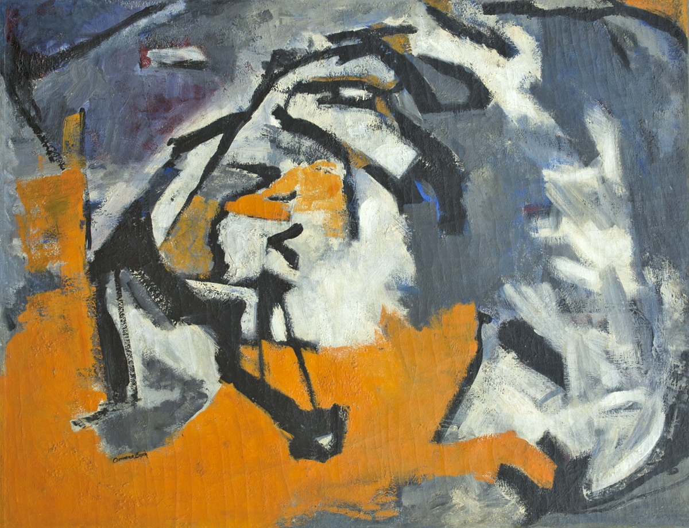

Intuition
Sobre la duda series
2009, oil and collage on cotton canvas, 35″x47″
Miscarriage
The shape of thought series
1995, oil crayons on rag paper, mounted on foamcore, 52″ 38″
Huracán, taino word 1/4
Puerto Rico series
1983, oil crayons, charcoal, paper collage, 28″ x 40″
La Pietá Triptych, 2/3
1984, oil and asphalt paper on linen canvas, 72″ x 48″

Überleben in Gelb 1/2
Überleben series
1984, paper collage on cotton canvas, 43″ x 37″
Collection of the Kulturministerium Vienna, Austria
Ruleta
War series
1979, collage on canvas, 1.60m x 1.20m